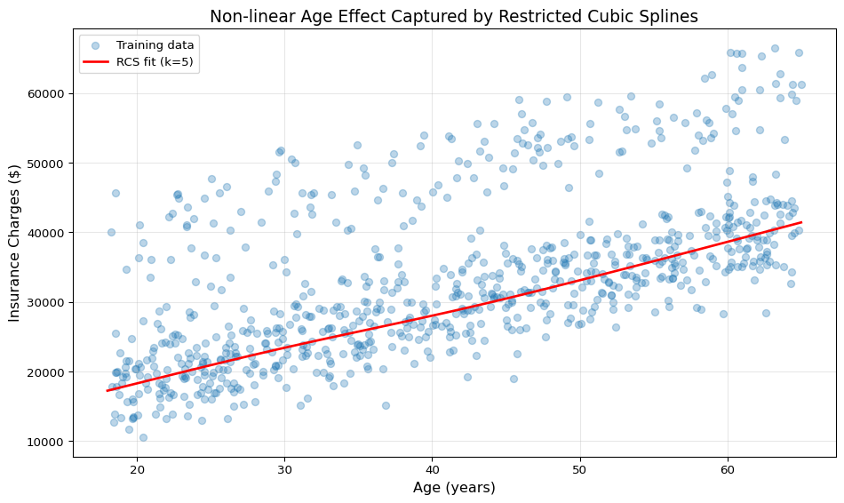

import numpy as np
from sklearn.base import BaseEstimator, TransformerMixin
def linear_spline(x):
"""Positive part function: max(0, x)"""
xx = x.copy()
xx[xx < 0] = 0
return xx
class RestrictedCubicSpline(BaseEstimator, TransformerMixin):
"""
Restricted Cubic Spline transformer for scikit-learn pipelines.
Parameters
----------
k : int, default=3
Number of knots. Must be between 3 and 7.
Attributes
----------
t_ : ndarray
Knot locations computed from training data.
References
----------
Harrell, F. E. (2015). Regression Modeling Strategies (2nd ed.).
Springer.
"""
def __init__(self, k=3):
self.k = k
def fit(self, X, y=None):
"""
Compute knot locations based on quantiles of X.
Parameters
----------
X : array-like of shape (n_samples, 1)
Training data.
y : Ignored
Not used, present for API consistency.
Returns
-------
self : object
Fitted transformer.
"""
if self.k < 0:
return self
# Convert to numpy array and ensure 2D
X = np.asarray(X)
if X.ndim == 1:
X = X.reshape(-1, 1)
# Knot locations from Regression Modeling Strategies
knot_locations = {
3: [0.1, 0.5, 0.9],
4: [0.05, 0.365, 0.65, 0.95],
5: [0.05, 0.275, 0.5, 0.725, 0.95],
6: [0.05, 0.23, 0.41, 0.59, 0.77, 0.95],
7: [0.025, 0.1833, 0.3417, 0.5, 0.6583, 0.8167, 0.975]
}
if self.k > 7 or self.k < 3:
raise ValueError(
'Value of k is not supported. Set k between 3 and 7.'
)
self._quantiles = knot_locations[self.k]
self.t_ = np.quantile(X, q=self._quantiles)
return self
def transform(self, X, y=None):
"""
Transform X into RCS basis expansion.
Parameters
----------
X : array-like of shape (n_samples, 1)
Data to transform.
y : Ignored
Not used, present for API consistency.
Returns
-------
basis_expansion : ndarray of shape (n_samples, k-1)
Transformed features.
"""
# Convert to numpy array and ensure 2D
X = np.asarray(X)
if X.ndim == 1:
X = X.reshape(-1, 1)
n_observations = X.shape[0]
if self.k < 0:
return X
basis_expansion = np.zeros((n_observations, self.k - 1))
# First basis function is just X
basis_expansion[:, 0] = X.ravel()
# Compute remaining basis functions
for j in range(self.k - 2):
basis_function = 0
basis_function += linear_spline(X - self.t_[j])**3
basis_function -= (
linear_spline(X - self.t_[self.k - 2])**3 *
(self.t_[-1] - self.t_[j]) / (self.t_[-1] - self.t_[-2])
)
basis_function += (
linear_spline(X - self.t_[-1])**3 *
(self.t_[-2] - self.t_[j]) / (self.t_[-1] - self.t_[-2])
)
# Normalize by range
basis_expansion[:, j + 1] = (
basis_function.ravel() / (self.t_[-1] - self.t_[0])**2
)
return basis_expansionImplementing Restricted Cubic Splines in Python with scikit-learn
python
machine-learning
regression
splines
A brief description of your post
Introduction
When modeling non-linear relationships in regression problems, we often face a trade-off between flexibility and interpretability. Polynomial regression can capture non-linearity but often exhibits unstable behavior at the boundaries. Restricted cubic splines (RCS) offer an elegant solution that provides flexibility in the middle of the data range while maintaining linear behavior at the extremes.
In this post, we’ll implement a scikit-learn compatible transformer for restricted cubic splines and demonstrate its use in a practical pipeline.
What Are Restricted Cubic Splines?
Restricted cubic splines, also known as natural cubic splines, are piecewise cubic polynomials that:
- Join smoothly at predetermined knot locations
- Are linear beyond the boundary knots (hence “restricted”)
- Have continuous first and second derivatives at all knots
This makes them particularly useful for modeling relationships that may be non-linear in the middle range but shouldn’t extrapolate wildly beyond the observed data range.
Why Use Restricted Cubic Splines?
- Stable extrapolation: Linear behavior at extremes prevents unrealistic predictions
- Fewer parameters: Typically require fewer degrees of freedom than polynomial regression
- Interpretability: Widely used in medical and epidemiological research (Harrell 2015)
- Smooth curves: No discontinuities or kinks in the fitted function
The Implementation
Our implementation follows the approach described in Harrell (2015), using quantile-based knot placement that has been validated across many applications.
Practical Example: Modeling Age Effects
Let’s demonstrate RCS with a dataset where we’d expect non-linear relationships: predicting insurance charges based on age and other factors.
import polars as pl
import matplotlib.pyplot as plt
from sklearn.model_selection import train_test_split, cross_val_score
from sklearn.pipeline import Pipeline
from sklearn.preprocessing import StandardScaler, OneHotEncoder
from sklearn.compose import ColumnTransformer
from sklearn.linear_model import Ridge
from sklearn.metrics import mean_squared_error, r2_score
import numpy as np
# Generate synthetic insurance data
np.random.seed(42)
n_samples = 1000
age = np.random.uniform(18, 65, n_samples)
bmi = np.random.normal(30, 6, n_samples)
smoker = np.random.choice(['yes', 'no'], n_samples, p=[0.2, 0.8])
# Non-linear relationship with age
charges = (
250 * age +
5 * age**2 -
0.03 * age**3 +
400 * bmi +
20000 * (smoker == 'yes') +
np.random.normal(0, 3000, n_samples)
)
df = pl.DataFrame({
'age': age,
'bmi': bmi,
'smoker': smoker,
'charges': charges
})
print(df.head())shape: (5, 4)
┌───────────┬───────────┬────────┬──────────────┐
│ age ┆ bmi ┆ smoker ┆ charges │
│ --- ┆ --- ┆ --- ┆ --- │
│ f64 ┆ f64 ┆ str ┆ f64 │
╞═══════════╪═══════════╪════════╪══════════════╡
│ 35.603386 ┆ 31.066206 ┆ no ┆ 30023.721844 │
│ 62.683572 ┆ 21.987934 ┆ no ┆ 35351.367255 │
│ 52.403715 ┆ 32.281187 ┆ no ┆ 35298.427487 │
│ 46.136949 ┆ 33.663514 ┆ yes ┆ 52870.563142 │
│ 25.332876 ┆ 33.358743 ┆ no ┆ 24943.057103 │
└───────────┴───────────┴────────┴──────────────┘Building the Pipeline
Now let’s create a workflow that uses RCS for age, standard scaling for BMI, and one-hot encoding for categorical variables. Since we’re using Polars and want to avoid pandas, we’ll manually handle the transformations.
# Split the data - convert numeric and categorical separately
X_age = df['age'].to_numpy().reshape(-1, 1)
X_bmi = df['bmi'].to_numpy().reshape(-1, 1)
X_smoker = df['smoker'].to_numpy().reshape(-1, 1)
y = df['charges'].to_numpy()
# Split into train/test
indices = np.arange(len(df))
train_idx, test_idx = train_test_split(indices, test_size=0.2, random_state=42)
X_age_train, X_age_test = X_age[train_idx], X_age[test_idx]
X_bmi_train, X_bmi_test = X_bmi[train_idx], X_bmi[test_idx]
X_smoker_train, X_smoker_test = X_smoker[train_idx], X_smoker[test_idx]
y_train, y_test = y[train_idx], y[test_idx]
# Create individual transformers
age_transformer = RestrictedCubicSpline(k=5)
bmi_transformer = StandardScaler()
smoker_transformer = OneHotEncoder(drop='first', sparse_output=False)
# Fit transformers
X_age_train_transformed = age_transformer.fit_transform(X_age_train)
X_bmi_train_transformed = bmi_transformer.fit_transform(X_bmi_train)
X_smoker_train_transformed = smoker_transformer.fit_transform(X_smoker_train)
# Combine features
X_train_combined = np.hstack([
X_age_train_transformed,
X_bmi_train_transformed,
X_smoker_train_transformed
])
# Transform test set
X_age_test_transformed = age_transformer.transform(X_age_test)
X_bmi_test_transformed = bmi_transformer.transform(X_bmi_test)
X_smoker_test_transformed = smoker_transformer.transform(X_smoker_test)
X_test_combined = np.hstack([
X_age_test_transformed,
X_bmi_test_transformed,
X_smoker_test_transformed
])
# Fit Ridge regression
regressor = Ridge(alpha=1.0)
regressor.fit(X_train_combined, y_train)
# Evaluate
y_pred = regressor.predict(X_test_combined)
rmse = np.sqrt(mean_squared_error(y_test, y_pred))
r2 = r2_score(y_test, y_pred)
print(f"RMSE: ${rmse:,.2f}")
print(f"R² Score: {r2:.3f}")RMSE: $2,825.51
R² Score: 0.932Visualizing the Age Effect
Let’s visualize the learned non-linear relationship between age and charges:
# Create prediction data
age_range = np.linspace(18, 65, 100).reshape(-1, 1)
bmi_constant = np.full((100, 1), 30)
smoker_constant = np.full((100, 1), 'no')
# Transform prediction features
age_pred_transformed = age_transformer.transform(age_range)
bmi_pred_transformed = bmi_transformer.transform(bmi_constant)
smoker_pred_transformed = smoker_transformer.transform(smoker_constant)
X_pred_combined = np.hstack([
age_pred_transformed,
bmi_pred_transformed,
smoker_pred_transformed
])
# Get predictions
predictions = regressor.predict(X_pred_combined)
# Plot
plt.figure(figsize=(10, 6))
plt.scatter(X_age_train.ravel(), y_train, alpha=0.3, label='Training data')
plt.plot(age_range.ravel(), predictions, 'r-', linewidth=2,
label='RCS fit (k=5)')
plt.xlabel('Age (years)', fontsize=12)
plt.ylabel('Insurance Charges ($)', fontsize=12)
plt.title('Non-linear Age Effect Captured by Restricted Cubic Splines',
fontsize=14)
plt.legend()
plt.grid(True, alpha=0.3)
plt.tight_layout()
plt.show()
Comparing Different Numbers of Knots
# Compare different numbers of knots
knot_options = [3, 4, 5, 6, 7]
cv_scores = []
for k in knot_options:
# Create transformers for this k
age_trans_k = RestrictedCubicSpline(k=k)
bmi_trans_k = StandardScaler()
smoker_trans_k = OneHotEncoder(drop='first', sparse_output=False)
# Fit and transform
X_age_trans = age_trans_k.fit_transform(X_age_train)
X_bmi_trans = bmi_trans_k.fit_transform(X_bmi_train)
X_smoker_trans = smoker_trans_k.fit_transform(X_smoker_train)
X_combined = np.hstack([X_age_trans, X_bmi_trans, X_smoker_trans])
# Cross-validation
reg_k = Ridge(alpha=1.0)
scores = cross_val_score(
reg_k, X_combined, y_train,
cv=5, scoring='neg_root_mean_squared_error'
)
cv_scores.append(-scores.mean())
results_df = pl.DataFrame({
'Knots': knot_options,
'CV RMSE': cv_scores
})
print(results_df)shape: (5, 2)
┌───────┬─────────────┐
│ Knots ┆ CV RMSE │
│ --- ┆ --- │
│ i64 ┆ f64 │
╞═══════╪═════════════╡
│ 3 ┆ 3125.510915 │
│ 4 ┆ 3133.936641 │
│ 5 ┆ 3134.665595 │
│ 6 ┆ 3136.286529 │
│ 7 ┆ 3136.791526 │
└───────┴─────────────┘plt.figure(figsize=(8, 5))
plt.plot(knot_options, cv_scores, 'o-', linewidth=2, markersize=8)
plt.xlabel('Number of Knots', fontsize=12)
plt.ylabel('Cross-validation RMSE ($)', fontsize=12)
plt.title('Model Performance vs Number of Knots', fontsize=14)
plt.grid(True, alpha=0.3)
plt.tight_layout()
plt.show()Key Considerations
Choosing the Number of Knots
- 3 knots: Simple, captures basic non-linearity
- 4-5 knots: Good default for most applications (Harrell 2015)
- 6-7 knots: Use when you have large sample sizes (n > 500) and expect complex relationships
Rule of thumb: Start with 4-5 knots and use cross-validation to optimize.
Limitations
- Requires sufficient data density across the range
- Knot placement based on quantiles assumes reasonable distribution
- May not capture discontinuities or sharp kinks
- For variables with extreme outliers, consider winsorizing first
Conclusion
Restricted cubic splines provide a principled way to model non-linear relationships while maintaining interpretability and stability. The scikit-learn compatible implementation shown here integrates seamlessly into standard ML pipelines, making it easy to incorporate RCS into your workflow.
The key advantages over polynomial regression are:
- Linear extrapolation beyond boundary knots
- Fewer degrees of freedom needed
- Better numerical stability
- Widely accepted in scientific literature
Try incorporating RCS into your next regression problem where you suspect non-linear relationships!
References
Harrell, Frank E. 2015. Regression Modeling Strategies: With Applications to Linear Models, Logistic and Ordinal Regression, and Survival Analysis. 2nd ed. Springer Series in Statistics. New York, NY: Springer. https://doi.org/10.1007/978-3-319-19425-7.